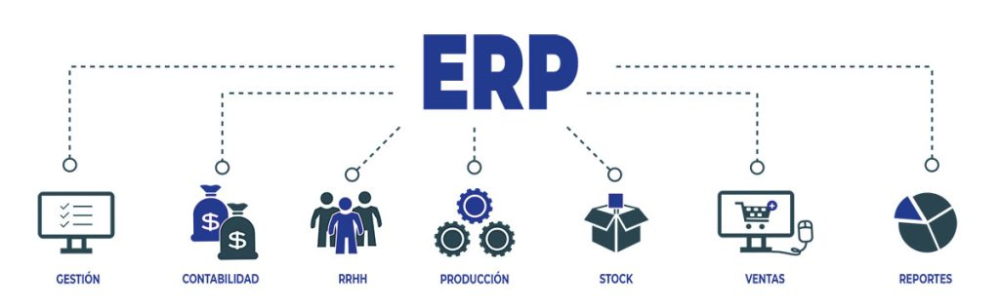
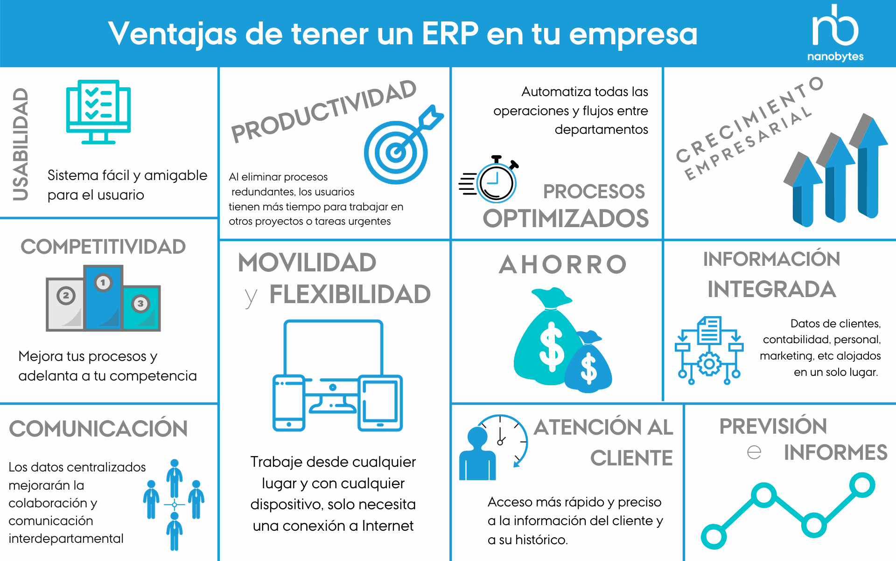
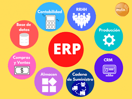

Una ERP (Enterprise Resource Planning) es un software de gestión integral que centraliza todos los departamentos de una empresa (finanzas, RRHH, ventas, producción, logística) en una única base de datos.

Sirve para:

La automatización de procesos y proporcionar información en tiempo real para mejorar la eficiencia y la toma de decisiones.
Los tipos de módulos se dividen en: básicos (contabilidad y compras), opcionales (CRM y gestión de proyectos) y verticales (específicos para sectores como construcción y agro).
Principalmente, se clasificarían por: funcionalidad (finanzas, RRHH y logística), especifidad sectorial (verticales u horizontales) y relevancia (básicos u opcionales).
Generalmente sí, ya que están diseñados de forma modular (diseñado y construido dividiendo un sistema en partes más pequeñas y estandarizadas) para adaptarse a necesidades específicas.

La integración de módulos es un proceso para diferentes componentes de un software de planificación de recursos empresariales (principalmente para que compartan una base de datos centralizada).
Es beneficiosa porque centraliza la información en una base de datos única, lo que elimina la duplicidad de datos y errores manuales, ayudando a optimizar la toma de decisiones.
Lo que aporta es una visión más automatizada en tiempo real de todas las áreas de una empresa, superando los enfoques basados en hojas de cálculo, procesos manuales, etc.
¡En qué mejoran las ERP respecto a otros enfoques?| ERPs | Características y funcionalidades | Requisitos de hardware | Orientación al mercado | Tipos de licencias y precios |
|---|---|---|---|---|
| SAP | Finanzas, contabilidad avanzada, producción y logística, etc. | Elevados (servidores potentes o cloud) e infraestructura robusta para grandes volúmenes | Empresas grandes, corporaciones y sectores como: industria, retail, banca y energía | Suscripción y costes altos (miles de euros por usuario + implantación elevada) |
| Microsoft Dynamics NAV | Finanzas, CRM, ventas y compras | Intermedios (SQL Server y cloud Azure) y arquitectura multicapa | Empresas medianas y sectores como: distribución, servicios y manufactura | Suscripción desde 70 a 100 euros/mes por usuario |
| Odoo | CRM, ventas, contabilidad, RRHH e inventario | Medio-bajo (cloud o híbrido), escalable según módulos | Startups, PYMES y empresas en crecimiento | Versión community: Gratuita (funciones limitadas)
Enterprise: De 11,70 a 17,90 euros/mes por usuario |
| Oracle NetSuite | Finanzas, comercio electrónico y 100% nube | Bajo (todo nube) | Empresas medianas y multinacionales | Coste medio (dependiendo de módulos y usuarios) |
| Sage X3 | Contabilidad, finanzas y producción | Requisitos medios | PYMES, empresas medianas y sectores como: industria y distribución | Licencia o suscripción con coste medio (dependiendo de módulos o usuarios) |